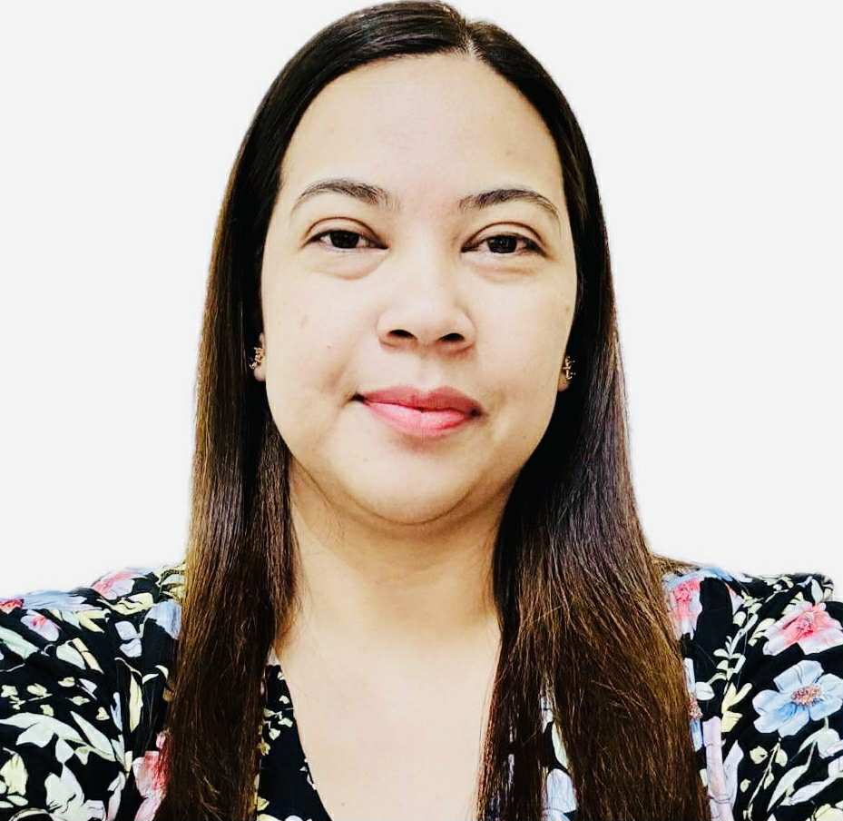

Amy Michelle Rellora | WDD 130
Hi, my name is Amy Michelle Rellora, and Im from the Philippines. Im happily married to my wonderful husband, Dondie, and together we are blessed with three amazing children named Rain, Rock, and River. Being a mom is one of my greatest joys, and I also love spending time in the kitchen, cooking and creating meals that bring my family together.
Im very excited to be part of this class and to continue growing my knowledge and skills. I have a strong background in Accounting and earned my Bachelors degree in Applied Business Management, which has helped me develop a love for organization, problem-solving, and working with numbers.
Working at an accounting software company has introduced me to the world of software development, and being surrounded by talented developers inspires me every day. My goal is to better understand their language so I can provide stronger support to our customers, collaborate more effectively with my team, and bridge the gap between technical solutions and client needs. Combining my accounting expertise with new technical skills excites me, and I look forward to applying what I learn in meaningful ways.